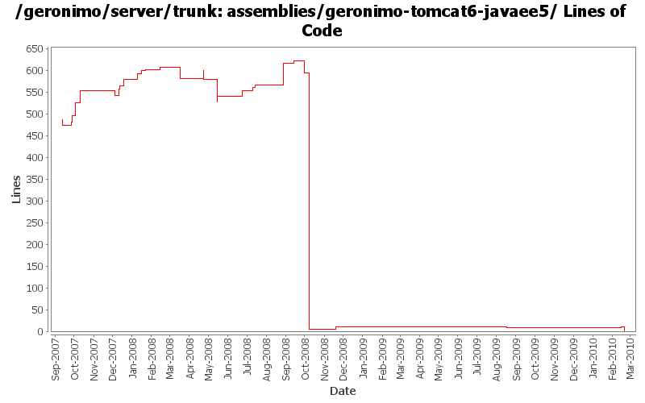

[root]/assemblies/geronimo-tomcat6-javaee5
 src
(0 files, 0 lines)
src
(0 files, 0 lines)
 main
(0 files, 0 lines)
main
(0 files, 0 lines)
 assembly
(0 files, 0 lines)
assembly
(0 files, 0 lines)
 resources
(0 files, 0 lines)
resources
(0 files, 0 lines)
 var
(0 files, 0 lines)
var
(0 files, 0 lines)
 config
(0 files, 0 lines)
config
(0 files, 0 lines)

| Author | Changes | Lines of Code | Lines per Change |
|---|---|---|---|
| Totals | 49 (100.0%) | 482 (100.0%) | 9.8 |
| djencks | 11 (22.4%) | 152 (31.5%) | 13.8 |
| gawor | 12 (24.5%) | 114 (23.7%) | 9.5 |
| jdillon | 12 (24.5%) | 89 (18.5%) | 7.4 |
| linsun | 2 (4.1%) | 51 (10.6%) | 25.5 |
| pmcmahan | 1 (2.0%) | 30 (6.2%) | 30.0 |
| gdamour | 2 (4.1%) | 21 (4.4%) | 10.5 |
| akulshreshtha | 1 (2.0%) | 15 (3.1%) | 15.0 |
| ecraig | 1 (2.0%) | 7 (1.5%) | 7.0 |
| dwoods | 4 (8.2%) | 2 (0.4%) | 0.5 |
| kevan | 3 (6.1%) | 1 (0.2%) | 0.3 |
Handle rename of tomcat plugin from javaee5 to javaee6 and rename assembly. Pull in wab instead of web plugingroups.
0 lines of code changed in 3 files:
remove gsh-wsgen build step fo now so the jee6 assemblies can be built
2 lines of code changed in 1 file:
GERONIMO-4655 upgrade version to 3.0-SNAPSHOT, make a few things more consistent
1 lines of code changed in 1 file:
[maven-release-plugin] prepare branch 2.2
8 lines of code changed in 1 file:
mostly working plugin that uses CXF tooling to generate WSDL and other artifacts for JAX-WS services (GERONIMO-4351)
6 lines of code changed in 1 file:
GERONIMO-4316 Use plugin groups to construct javaee5 assemblies
1 lines of code changed in 1 file:
restore wsgen/wsimport gshell registration
26 lines of code changed in 1 file:
GERONIMO-4300 allow c-m-p to generate plugins with no classloader, dependending on absence of plan
67 lines of code changed in 1 file:
part of GERONIMO-4265 - add a few other plugin groups and include them to the jetty/tomcat assembly
50 lines of code changed in 1 file:
register wsgen/wsimport commands with gshell - kinda hacky but it works (GERONIMO-3665)
6 lines of code changed in 1 file:
Secure JMX connector - based on patch from Vamsi (GERONIMO-3876)
7 lines of code changed in 1 file:
added Concurrency Utilities for Java EE implementation to the server
14 lines of code changed in 1 file:
Hook up gshell plugins
13 lines of code changed in 1 file:
Simplify things a wee bit more
2 lines of code changed in 1 file:
Remove unused schema build muck
Make sure that we unpack the zip framework assembly to avoid extra build muck and problems when /tmp is not on the same disk
1 lines of code changed in 1 file:
Drop .txt suffix on legal muck to be more consistent with maven-remote-resources-plugin, and allow the common ianal-maven-plugin config to be used
Drop per-module legal muck
0 lines of code changed in 1 file:
Use ianal-maven-plugin to help ensure that project artifacts contain legal muck
21 lines of code changed in 1 file:
Use jar instead of resource-bundle
Tidy up poms
0 lines of code changed in 1 file:
GERONIMO-3924 Make car-maven-plugin have a server-assembly packaging with lifecycle that avoids need for tools-maven-plugin
4 lines of code changed in 1 file:
Add support for excludes to ArchiverGBean and car-maven-plugin. Also add META-INF/** excludes to the different assemblies (GERONIMO-3847)
5 lines of code changed in 1 file:
Update LICENSE and NOTICE files. Merge from 2.1 branch
0 lines of code changed in 2 files:
upgrade trunk to 2.2-SNAPSHOT
1 lines of code changed in 1 file:
a few more groupid updates
1 lines of code changed in 1 file:
(GERONIMO-3747) Fixed parentage of module groups, though most still need to have their modules put into the proper groupId
Updated groupId of *everything* under framework/** to org.apache.geronimo.framework, and did my best to update all references
27 lines of code changed in 1 file:
(GERONIMO-3771) Moved maven-plugins/* to buildsupport/*, updated groupId to org.apache.geronimo.buildsupport
1 lines of code changed in 1 file:
Move farm related classes to new sub-project geronimo-farm. Add a new
configuration "farming" and move farming related GBeans from the clustering
config. to this new one. Also, by default this configuration is not started.
7 lines of code changed in 1 file:
GERONIMO-3748 Throw another sop to windows micro-file-name features, call them sysdb-console-*
1 lines of code changed in 1 file:
GERONIMO-3743 Better naming convention for console plugins: *-console-jetty/tomcat
5 lines of code changed in 1 file:
GERONIMO-3300
Upgrade Dojo to 1.0
-Moved dojo 0.4.3 to dojolegacy artifact to prevent issues/conflicts with 1.0.2, as well as allow both to co-exist
-created dojo-legacy plugin for 0.4.3
-changed dependencies for 0.4.3 to use dojo-legacy plugin
-changed dojo plugin to use 1.0.2
-added dojo 1.0.2 to repository
-set dojo 1.0.2 to default context root of /dojo/1.0
-Dojo 0.4.3 still has default context root of /dojo
-added dojo plugin to default jee5 assemblies
7 lines of code changed in 1 file:
GERONIMO-3732 step 3 Move plugin and deployment pages into a console plugin
7 lines of code changed in 1 file:
GERONIMO-3733 unpack framework before adding new plugins, not afterwards
2 lines of code changed in 1 file:
GERONIMO-3697 Add Monitoring plugins to geronimo-*-javaee5 assemblies
15 lines of code changed in 1 file:
install jaxws-tools as a plugin (GERONIMO-3695)
7 lines of code changed in 1 file:
Add support for the clustering of Tomcat Web-applications over WADI. The change
replicates the same projects and design than for the clustering of Jetty
Web-applications over WADI.
A couple of things specific to Tomcat: we insert a Valve in front of all the
Valves, even the Geronimo before after one, in order to hook-in the traversal
of the WADI Contextualiser stack prior to enter the web-application.
This fixes GERONIMO-3696 - Tomcat Clustering over WADI
14 lines of code changed in 1 file:
GERONIMO-3607 Add 'assemble a server' support to geronimo and use it from car-maven-plugin and gshell. Not yet available in the console. Better repository support would be desirable
19 lines of code changed in 1 file:
Fix id's for framework copy
1 lines of code changed in 1 file:
GERONIMO-3502 Allow conditions on starting plugins to be specified in geronimo-plugin.xml
2 lines of code changed in 1 file:
GERONIMO-3516 replace the admin console with the extensible version
30 lines of code changed in 1 file:
for now, do not install axis2 in jetty and cxf in tomcat becuase of GERONIMO-3502. also map j2ee-system/car to client-system/car to prevent classloader errors in app client
4 lines of code changed in 1 file:
GERONIMO-3496 assemble servers out of plugins
36 lines of code changed in 1 file:
(5 more)